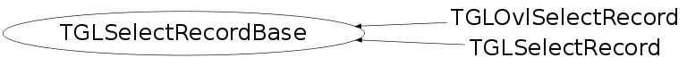

class TGLSelectRecordBase
Base class for select records. Supports initialization from a raw GL record (UInt_t*) and copies the name-data into internal array.
Function Members (Methods)
public:
| TGLSelectRecordBase() | |
| TGLSelectRecordBase(UInt_t* data) | |
| TGLSelectRecordBase(const TGLSelectRecordBase& rec) | |
| virtual | ~TGLSelectRecordBase() |
| static TClass* | Class() |
| UInt_t | GetCurrItem() const |
| UInt_t | GetItem(Int_t i) const |
| UInt_t* | GetItems() const |
| Float_t | GetMaxZ() const |
| Float_t | GetMinZ() const |
| Int_t | GetN() const |
| Int_t | GetNLeft() const |
| virtual TClass* | IsA() const |
| void | NextPos() |
| TGLSelectRecordBase& | operator=(const TGLSelectRecordBase& rec) |
| void | PrevPos() |
| virtual void | Reset() |
| void | ResetPos() |
| virtual void | Set(UInt_t* data) |
| void | SetRawOnly(UInt_t* data) |
| virtual void | ShowMembers(TMemberInspector& insp) |
| virtual void | Streamer(TBuffer& b) |
| void | StreamerNVirtual(TBuffer& b) |
Class Charts
{kind=link}
{kind=link}
{kind=link}
{kind=link}
